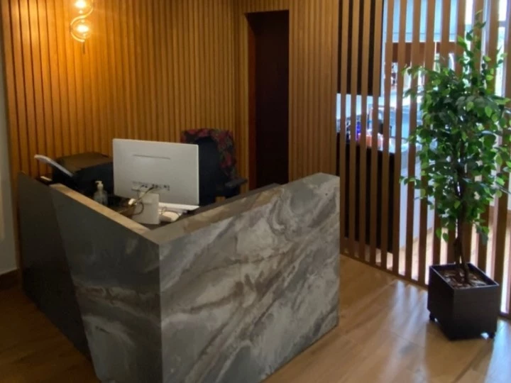
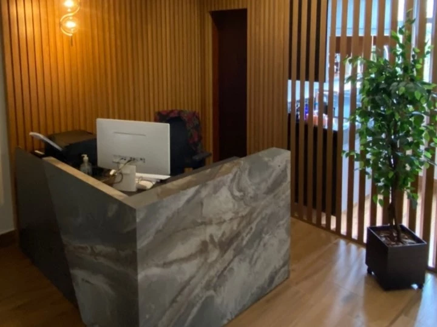

Atendimento presencial e online.
Suporte de 2ª a 6ª feira, das 08:00 às 18:00 horas.
Missionários dos serviços públicos.
Atendimento presencial e online.
Suporte de 2ª a 6ª feira, das 08:00 às 18:00 horas.
Missionários dos serviços públicos.
A BRAZ E LEITE SOCIEDADE DE ADVOGADOS foi criada oficialmente em dezembro de 2011, sendo registrada na Ordem dos Advogados de Minas Gerais em 04 de janeiro de 2012. A consolidação do registro da empresa se dá pela junção de experiências anteriores já consolidadas de seus sócios, os quais em sua maioria, têm mais de 20 (vinte) anos de experiências profissional exclusiva ou predominante na área pública, especialmente nos campos do Direito Administrativo, Direito Constitucional, Direito Municipal, Direito Financeiro e Tributário.
É sabido, no entanto, que a Administração Pública, há tempos, passa por profundas alterações. Desde a derrocada do regime militar, processo que se inicia com a eleição de um presidente civil pelo Colégio Eleitoral em 1985, seguido de eleições democráticas em todos os níveis, a Administração Pública Brasileira foi alvo de profunda revisão, o que ainda segue o seu curso. Alguns fatores importantes devem ser apontados. De um lado, a liberdade de imprensa e a exposição pública, em denúncias de toda ordem, tanto da ineficiência na prestação de serviços públicos, como da corrupção alastrada. De outra parte, a mobilização da sociedade civil inconformada com tal estado de coisas. Por fim, a aprovação de leis diversas, seja convergindo na direção do combate ao desvio e malbaratamento dos recursos públicos, exigindo utilização racional desses bens, seja no aperfeiçoamento das instâncias de fiscalização e controle, seja na defesa estrita dos direitos da administração pública, seja na orientação técnica correta na hora de executar os serviços públicos. Tarefas essas que nossa equipe se propõe a auxiliar o Município de Monte Sião a buscar e desenvolver.
Além da autonomia político-administrativa, a Carta Magna de 1988 elevou o município à condição de ente federado, arrolando-lhe extensa lista de competências, inclusive a de legislar sobre todos os assuntos de interesse local. Ademais, parte, a prestação dos serviços essenciais foi amplamente atribuída aos municípios, num verdadeiro processo de “municipalização” dos serviços públicos”. Desse modo, decorreu maior responsabilidade para o administrador público no exercício do mandato de Prefeito, em virtude das regras jurídicas e dos limites legais, de sorte que se faz necessária uma orientação eficaz, eficiente e embasada na Constituição e nas leis esparsas.
No plano do controle e da fiscalização, são inegáveis as transformações. Câmaras de Vereadores submissas ao Poder Executivo e Tribunais de Contas inoperantes figuram cada vez mais como coisas do passado, ao mesmo tempo em que o Ministério Público assumiu definitivamente posição de destaque na condição de fiscal da lei, curador do patrimônio público e protetor dos interesses coletivos e difusos.
O acúmulo de atribuições, a escassez de recursos e o olhar vigilante da sociedade civil e dos órgãos de controle, por conseguinte, acrescentaram novas tarefas e preocupações na agenda do administrador municipal e do seu staff administrativo. Não se lhes exige apenas honestidade no manuseio dos recursos públicos. Também se lhes exige transparência, cumprimento de metas e observação de limites diversos, submissão a complexos sistemas de demonstração de gastos e prestação de contas, como também, planejamento da ação administrativa, eficácia e eficiência e em especial o cumprimento dos princípios da legalidade, impessoalidade, moralidade, publicidade e eficiência previstos no art. 37 da Constituição Federal.
O alheamento a tais exigências será, possivelmente, a antevéspera do encontro com futuros dissabores, na medida em que o processo de revisão da Administração Pública também contemplou o combate à impunidade, mediante fixação de penas diversas que caminham da simples multa pecuniária à perda do mandado ou prisão. Também figura cada vez mais como coisa do passado a idéia de que nada acontece com o administrador público quando este se afasta dos itinerários fixados pela lei.
Acrescente-se a enorme complexidade da atividade de administração pública. As funções de planejamento, organização, direção e controle, que são etapas fundamentais para as estruturas organizacionais, adquire contornos próprios quando realizadas no âmbito da Administração Pública. Isso porque incidem normas próprias em cada uma daquelas funções.
Decorre, pois, das exposições anteriores que o administrador público deve ater-se à regularidade dos atos do seu governo com o mesmo cuidado com que se dedicará a servir ao seu povo da melhor forma ao seu alcance, garantindo-lhe eficiente, eficaz e efetiva prestação de serviços. Ao menos tempo, precisa desenvolver habilidades para gerar uma máquina complexa e submetida a um extenso repertório legal.
Neste contexto, repisa-se, é que foi criada a BRAZ E LEITE - SOCIEDADE DE ADVOGADOS, empresa especializada em Direito Público nos campos do Direito Administrativo, Direito Constitucional, Direito Financeiro e Tributário e Direito Municipal. Em cada um desses campos de conhecimento, a empresa mantém quadros técnicos especializados, desenvolvendo, simultaneamente, metodologias de integração interdisciplinar, de forma a garantir que seus advogados/consultores compreendam a Administração Pública em toda a sua complexidade e não apenas nas suas áreas de atuação específica.
Para alcançar a eficiência, a eficácia e a efetividades, a empresa desenvolve um constante trabalho de estudo e pesquisa, buscando disponibilizar aos seus clientes, através dos consultores e especialistas, informações atualizadas, suporte técnico e qualidade em suas peças.
Em nível Jurídico, busca-se a garantia de que todos os atos da Administração Pública estejam revestidos dos princípios constitucionais aplicáveis e em perfeita sincronia com a legislação vigente. Nesta direção, atua mediante elaboração de pareceres técnicos sobre consultas formuladas, auditoria jurídica, elaboração de legislação complementar e ordinária nos diversos campos de competência e elaboração dos instrumentos normativos regulamentares (decretos, portarias, etc.), além da representação em juízo ou fora dele.
A plena realização pessoal e profissional dos advogados da empresa encontra-se diretamente vinculada à possibilidade de contribuir de forma efetiva para que a Administração Pública desenvolva plenamente as suas funções.
Assim, buscando a excelência no atendimento ao cliente, a BRAZ E LEITE - SOCIEDADE DE ADVOGADOS com sua expertise em Administração Pública em todas as suas nuances vinculados ao Direito tem condições singulares e capacidade técnica de atender e orientar seus clientes de forma eficientes na busca da legalidade, impessoalidade, moralidade, publicidade e eficiência, pilares fundamentais à Administração Pública.
Prestar serviços, mediante contrato, no campo da advocacia e consultoria jurídica.
Promover estudos para a Administração Pública, visando estabelecer mecanismos de defesa em processos administrativos e judiciais nos quais o Município seja parte;
Implantar processos de análise da legislação atual visando orientar na revisão, alteração e atualização das normas locais.
Desenvolver processo de controle, revisão e atualização de processos administrativos internos, tais como processos licitatórios, disciplinares, de convênios, de prestação de contas, entre outros.
Desenvolver processo de controle, revisão e atualização de processos administrativos internos, tais como processos licitatórios, disciplinares, de convênios, de prestação de contas, entre outros.
Acompanhar os representantes municipais nos órgãos estaduais e federais públicos localizados em Belo Horizonte, em Brasília e demais localidades em que o município esteja vinculado, representando os interesses públicos municipais e orientando quanto a legalidade de cada ato de compromisso efetuado pelo Município.

 

Disponibilizar aos seus clientes informações atualizadas, suporte técnico e as mais modernas tecnologias.
Saiba mais